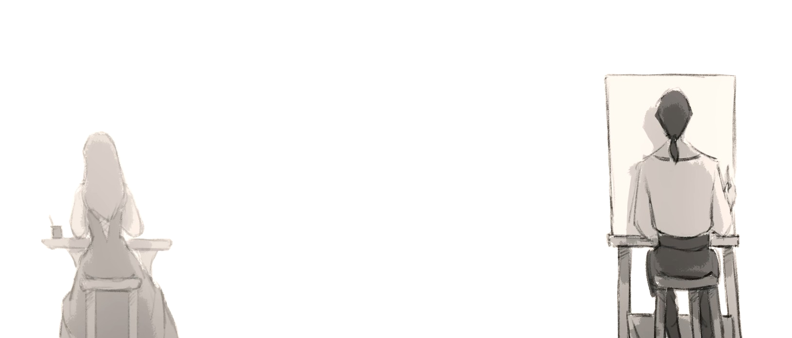
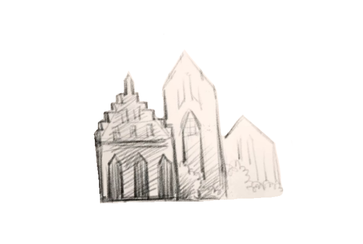
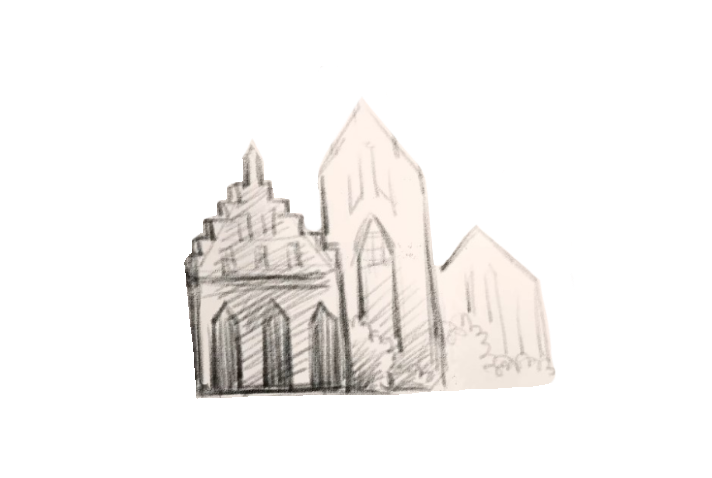
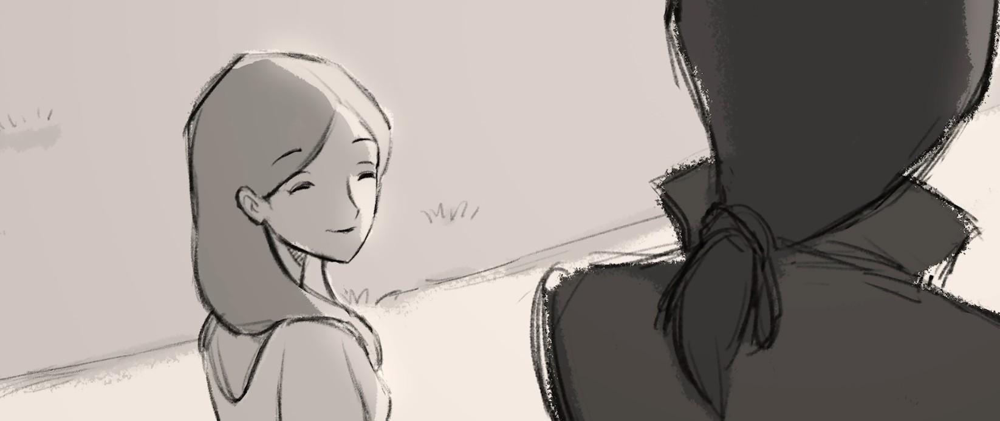
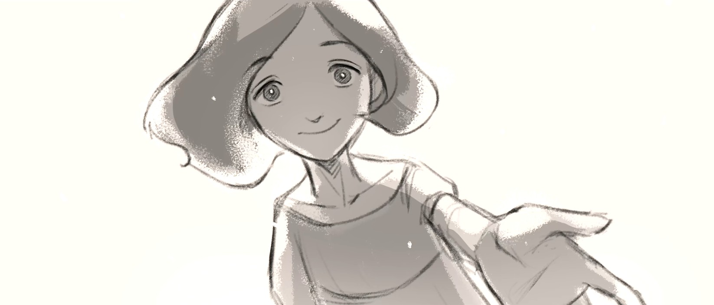
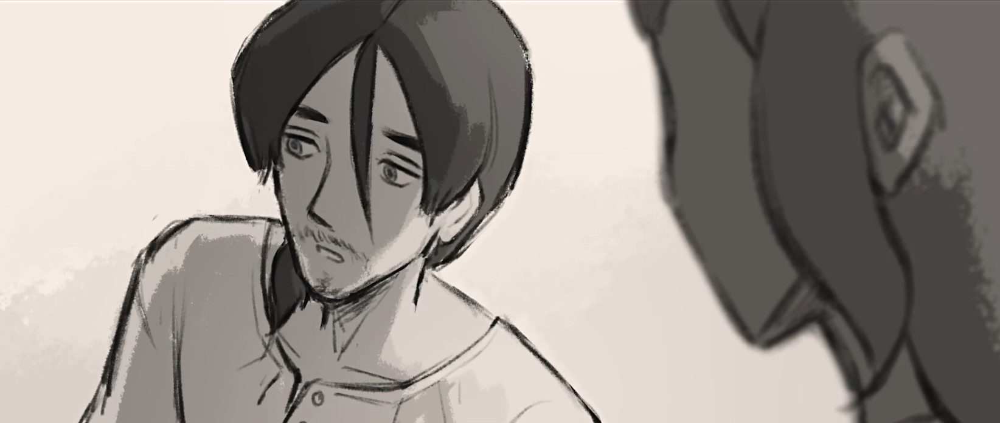
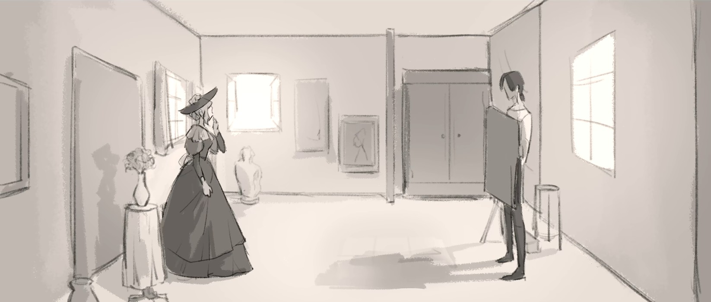

Athan's EYES
Florence's EYES

Year 1678: Another Soul Who Was Different
For centuries, I've painted countless portraits and glimpsed the pasts of many.
I remember so many of them—especially Florence.
I remember so many of them—especially Florence.

"Florence, stop messing with your dress!"
"But mother, I…I don't really like this. This whole look is so NOT 'me'."
"But mother, I…I don't really like this. This whole look is so NOT 'me'."
I knew what she loved.
I'd seen it while painting her portrait.
I'd seen it while painting her portrait.


 

The universe. Memories. The meaning of life.
The things people called daydreams, or even "supernatural".
I guessed she might understand my situation, so without realizing it, I laid all my talents and experiences to her.
The things people called daydreams, or even "supernatural".
I guessed she might understand my situation, so without realizing it, I laid all my talents and experiences to her.

"Maybe the world needs a healer like you, Athan. Have you ever thought about that?
It's not your choice to see your clients' past--but because of this, you make people feel 'seen'."
It's not your choice to see your clients' past--but because of this, you make people feel 'seen'."

"Though it's easy for you to know others, it's difficult for others to do the same to you."
You haven't been SEEN for a long time, have you, Athan?"
You haven't been SEEN for a long time, have you, Athan?"
I had never heard words like THAT.
For the first time in so long, I felt UNDERSTOOD.
For the first time in so long, I felt UNDERSTOOD.
Year 1678: Another Soul Who Was Different
I'd wanted to become a writer since I was young, but those around me never took it seriously.
Until I met Athan. Only then did I truly confirm that writing was what I wanted my life to be.
Until I met Athan. Only then did I truly confirm that writing was what I wanted my life to be.

"I can actually see you writing.
It's related to something I was born with."
It's related to something I was born with."
What he said was true.
The portrait he painted of me looked as if he'd actually watched me draw .
The portrait he painted of me looked as if he'd actually watched me draw .


He told me all about his talents and past experiences.
I had never met someone so fascinating.
His story truly inspired my writing.
I had never met someone so fascinating.
His story truly inspired my writing.

He thanked me, saying no one had ever described him as a "healer" before.
But honestly, I think I should be the one thanking him--his story made me ever more certain that I want to keep writing.
But honestly, I think I should be the one thanking him--his story made me ever more certain that I want to keep writing.

"You haven't listened to yourself for a while. Fortunately, I heard you today.
I wish you know you deserve to be listened to."
I wish you know you deserve to be listened to."
I had never heard words like THAT.
For the first time in so long, I felt UNDERSTOOD.
For the first time in so long, I felt UNDERSTOOD.